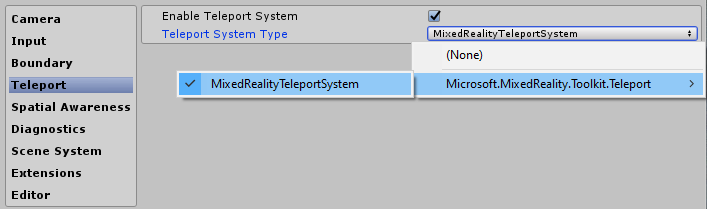
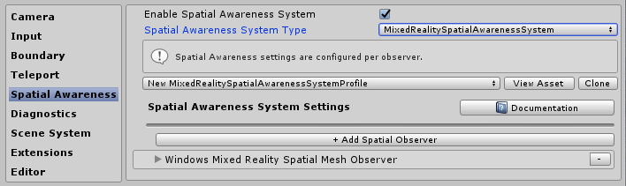
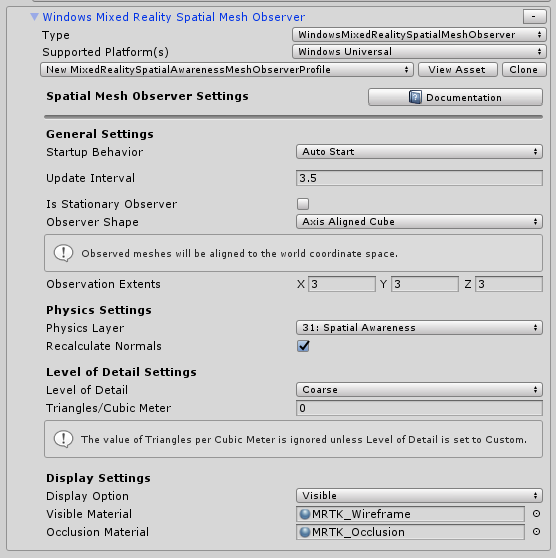
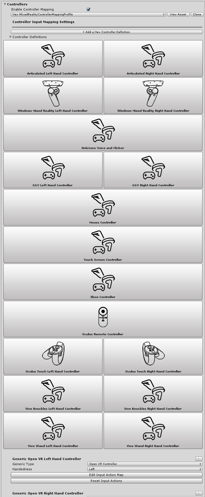

Mixed Reality Toolkit プロファイル設定ガイド

Mixed Reality Toolkit は、ツールキットを管理するために必要な設定を可能な限り集中化しています (ランタイムの「モノ」は除く)。
このガイドは、ツールキットで現在使用できる、設定プロファイル画面の簡単なチュートリアルです。
Mixed Reality Toolkit の主な設定プロファイル (Congifuration Profile)
シーンの MixedRealityToolkit GameObject にアタッチされている主な設定プロファイル (Congifuration Profile) は、ツールキットの最初のエントリーポイントです。
Note
Mixed Reality Toolkit は、プロジェクトの共通のスタートポイントを常に持たせるように、デフォルトの設定画面を「ロック」しています。そして、プロジェクトの進捗に合わせて独自の設定を定義することをお勧めします。MRTK の設定はプレイモード中は編集できません。

Mixed Reality Toolkit のすべての「デフォルト」プロファイルは、Assets\MixedRealityToolkit.SDK\Profiles フォルダ内の SDK プロジェクトにあります。
Important
デフォルトの HoloLens 2 の設定プロファイルは、HoloLens 2 用に最適化されています。 Profiles をご確認ください。
メインの Mixed Reality Toolkit 設定プロファイルを開くと、Inspector (インスペクター)に次の画面が表示されます。

シーン内で MixedRealityToolkit を使用せずに MixedRealityToolkitConfigurationProfile アセットを選択すると、MRTK がシーンを自動的に設定するかどうかを確認するメッセージが表示されます。これはオプションですが、すべての設定画面にアクセスするには、シーン内にアクティブな MixedRealityToolkit オブジェクトが存在する必要があります。
これにより、プロジェクトの現在アクティブなランタイム設定が保存されます。
Note
ほとんどのプロファイルは、InputActions 設定を除き、実行時に変更できます（後述）。プロファイルは、新しい設定/ランタイム環境に自動的に適応します。
ここから、MRTK のすべての設定プロファイルに移動できます。
- Experience settings（エクスペリエンスの設定）
- Camera settings（カメラの設定）
- Input system settings（入力システムの設定）
- Boundary visualization settings（境界可視化の設定）
- Teleportation system selection（テレポーテーション システムの選択）
- Spatial awareness settings（空間認識の設定）
- Diagnostics settings（診断の設定）
- Scene system settings（シーン システムの設定）
- 追加サービスの設定
- Input actions settings（入力アクションの設定）
- Input action rules （入力アクション ルール）
- Pointer configuration（ポインターの設定）
- Gestures configuration（ジェスチャの設定）
- Speech commands（音声コマンド）
- Controller mapping configuration（コントローラー マッピングの設定）
- Controller visualization settings（コントローラーの可視化の設定）
- Service Inspectors（サービス インスペクター）
これらの設定プロファイルについては、以下の関連セクションで詳しく説明します。
Experience settings（エクスペリエンスの設定）
Mixed Reality Toolkit のメイン設定ページにあるこの項目では、プロジェクトの Mixed Reality 環境のデフォルトの操作が定義されます。

Camera settings（カメラの設定）
カメラ設定では、Mixed Reality プロジェクトのカメラの設定方法を定義し、一般的なクリッピング (clipping) 、クオリティ、透明度 (transparency) の設定を定義します。
Input system settings（入力システムの設定）
Mixed Reality プロジェクトは、すべての入力イベントを取り扱うための堅牢で十分に熟練した入力システムを提供しており、これはデフォルトで選択されています。

MRTK が提供する入力システムの背後にはその他のいくつかのシステムがあり、マルチプラットフォーム / Mixed Reality フレームワークの複雑さを抽象化するために、複雑な絡み合わせを駆動させ、管理するのを補助します。

個々のプロファイルの詳細は以下のとおりです。
- Focus Settings（フォーカスの設定）
- Input actions settings（入力アクションの設定）
- Input action rules （入力アクション ルール）
- Pointer configuration（ポインターの設定）
- Gestures configuration（ジェスチャの設定）
- Speech commands（音声コマンド）
- Controller mapping configuration（コントローラー マッピングの設定）
- Controller visualization settings（コントローラーの可視化の設定）
Boundary visualization settings（境界可視化の設定）
境界 (Boundary) システムは、元となるプラットフォームの境界/ガーディアン システムから取得した境界を解釈します。境界ビジュアライザー (Boundary visualizer) 設定を使用すると、シーン内で記録された境界をユーザーの位置に対して自動的に表示できます。境界線は、ユーザーがシーン内でテレポートする場所に基づいて反応/更新も行われます。

Teleportation system selection（テレポーテーション システムの選択）
Mixed Reality プロジェクトは、プロジェクトでのテレポーテーション イベントを管理するための完全な機能を備えたテレポーテーション システムを提供しており、これはデフォルトで選択されています。
Spatial awareness settings（空間認識の設定）
Mixed Reality プロジェクトは、空間スキャン システムと連携する再構成された空間認識システムを提供しており、これはデフォルトで選択されています。MRTK 空間認識システムの背後にあるアーキテクチャはこちらで見ることができます。
Mixed Reality Toolkit の空間認識設定を使用すると、どのようにシステムが開始されるかを調整できます。それは、アプリケーションの起動時に自動的に行うことも、視野の範囲を設定するのと同様に後でプログラムから行うこともできます。
また、メッシュとサーフェスの設定を行い、プロジェクトが周囲の環境をどのように認識するかをさらにカスタマイズすることもできます。
これは、スキャンされた環境を提供できるデバイスにのみ適用されます。
Diagnostics settings（診断の設定）
オプションですが、MRTK の非常に便利な機能は、プラグイン診断機能です。これは、シーンへのデバッグ ログのスタイルです。

診断プロファイルは、シーン内の表示パネルを有効/無効にする便利なスイッチオン/オフなど、プロジェクト実行中での監視のためのいくつかの簡単なシステムを提供します。

Scene system settings（シーン システムの設定）
MRTK は、複雑なシーンのロード/アンロードの管理に役立つオプション サービスを提供します。シーン システムがプロジェクトに適しているかどうかを判断するには、シーン システムの開始ガイドを参照してください。

追加サービスの設定
Mixed Reality Toolkit のより高度な領域の1つは、フレームワークに任意の「サービス」の登録を可能にするサービス ロケーター パターンの実装です。これにより、フレームワークに新しい機能/システムを簡単に拡張できるだけでなく、プロジェクトはこれらの機能を利用して独自のランタイムコンポーネントを登録することもできます。
Stephen Hodgson の Mixed Reality フレームワークに関する記事で、基礎となるフレームワークとその実装についての詳細を読むことができます。
登録済みのサービスは、MonoBehaviour または不格好なシングルトン パターンを実装するオーバーヘッドとコストなしで、すべての Unity イベントを最大限に活用できます。これにより、フォアグラウンド（foreground）プロセスとバックグラウンド (background) プロセスの両方で、シーン オーバーヘッドのない純粋な C# コンポーネントを使用できます。例えば、スポーン システム、ランタイム ゲーム ロジックなど、実質的には全てのもので利用できます。

Input actions settings（入力アクションの設定）
入力アクションを使用すると、ランタイムプロジェクトからのすべての物理的なインタラクションや入力を抽象化することができます。すべての物理入力 (コントローラー/手/マウス等) は、ランタイムプロジェクトで使用するための論理入力アクションに変換されます。これにより、入力元に関係なく、プロジェクトはシーン内でこれらのアクションを「実行する操作」または「対象とのインタラクション」としてシンプルに実装できます。
新しい入力アクションを作成するには、[Add a new Action] ボタンをクリックし、それが何を表すのかがわかりやすい名前を入力します。次に、アクションが伝える軸 (データ型) を選択するか、物理コントローラーの場合は、アクションにひもづく物理入力タイプを選択するだけです。例えば、以下のような軸やデータ型があります。
| 軸拘束 | データ型 | 説明 | 使用例 |
|---|---|---|---|
| None（なし） | データなし | 空のアクションまたはイベントに使用 | イベント トリガー |
| Raw（生データ） （予約済み） | object | 将来の使用のために予約済み | N/A |
| Digital（デジタル） | bool | boolean 値のオン オフ データ型 | コントローラー ボタン |
| Single Axis（1軸） | float | 単精度のデータ値 | トリガーなど、範囲のある入力 |
| Dual Axis（2軸） | Vector2 | 複数軸のための、2つの float データ型 | 十字キーやジョイスティック |
| Three Dof Position（3自由度位置） | Vector3 | 3つの float データからなる位置のタイプデータ | 3D 位置スタイルのみコントローラー |
| Three Dof Rotation（3自由度回転） | Quaternion | 4つの float 軸をもつ回転のみの入力 | 3軸のコントローラー、例えば Oculus Go コントローラー |
| Six Dof（6自由度） | Mixed Reality Pose (Vector3, Quaternion) | Vector3 コンポーネントと Quaternion コンポーネントの両方を使用した位置と回転の入力 | モーション コントローラーまたは Pointer |
入力アクションを利用するイベントは物理コントローラーに限定されず、プロジェクト内で実行時に新しいアクションを生成できます。
Note
入力アクションは、実行時に編集できない数少ないコンポーネントの 1 つであり、設計時のみ変更できます。このプロファイルは、各アクションに対して生成された ID に対しフレームワーク (およびプロジェクト) が依存しているため、プロジェクトの実行中に入れ替えをしないでください。

Input action rules （入力アクション ルール）
Input action rules を使用すると、1 つの入力アクションに対して発生したイベントを、そのデータ値に基づいて別のアクションに自動的に変換できます。これらはフレームワーク内でシームレスに管理され、パフォーマンスコストは発生しません。
たとえば、1 つの十字キーの 2 軸入力イベントを、4 つの対応する "DPad Up" / "DPad Down" / "Dpad Left" / "Dpad Right" アクションに変換します (下の図に示すように)。
これは、独自のコードで行うこともできます。しかし、これは非常に一般的なパターンであったので、フレームワークはこれをすぐに使えるようにするメカニズムを提供しています。
Input Action Rules は、使用可能な入力軸のすべてに対して設定できます。ただし、1つの軸タイプからの入力アクションは、同じ軸タイプの別の入力アクションに変換できます。2 軸アクションを別の 2 軸アクションにマップできますが、デジタルアクションまたは None アクションにはマップできません。

Pointer configuration（ポインターの設定）
ポインターは、シーン内ですべての入力デバイスからの相互作用を働かせるために使われ、入力の向きとヒット テストの両方を、シーン内の任意のオブジェクト (コライダーがアタッチされているもの、または UI コンポーネント) に対し与えます。ポインターは、デフォルトでは、コントローラー、ヘッドセット(ゲイズ / フォーカス)、マウス / タッチ入力用に自動的に設定されます。
ポインターは、Mixed Reality Toolkit によって提供される多くのラインコンポーネントの 1 つを使用してアクティブなシーン内で可視化することもできますし、MRTK IMixedRealityPointer インターフェイスを実装している場合は独自のコンポーネントを使用して可視化することもできます。

- Pointing Extent: ゲイズを含むすべてのポインターのグローバルなポインティング範囲を決定します。
- Pointing Raycast Layer Masks: ポインターがどのレイヤーに対してレイキャストを行うかを決定します。
- Debug Draw Pointing Rays: レイキャストに使用されるレイを可視化するためのデバッグ ヘルパー
- Debug Draw Pointing Rays Colors: 可視化に使用する色のセット
- Gaze cursor prefab: 任意のシーンにグローバルなゲイズ カーソルを簡単に指定できるようにします。
必要に応じて Gaze のなにか特定の値をオーバーライドするために、Gaze Provider にすばやくジャンプするための追加のヘルパーボタンがあります。
Gestures configuration（ジェスチャの設定）
ジェスチャは、入力アクションをさまざまな SDK (HoloLens など) によって提供されるさまざまな「ジェスチャ」入力メソッドに割り当てることができるシステム固有の実装です。
Note
現在のジェスチャの実装は HoloLens 専用で、将来ツールキットに他のシステムが追加される際に拡張される予定です (日付は未定です)。

Speech Commands（音声コマンド）
ジェスチャと同様に、一部のランタイム プラットフォームでは、Unity プロジェクトで受信できるコマンドを生成する機能を備えたインテリジェントな "Speech to Text" 機能も提供します。この設定プロファイルを使用すると、登録済みの 「単語」を設定し、プロジェクトで受信できる入力アクションに変換できます。必要に応じて、キーボード アクションにアタッチすることもできます。
Important
このシステムは現在、HoloLens や Windows 10 デスクトップなどの Windows 10 プラットフォームで実行されている場合にのみ音声認識をサポートしており、将来 MRTK に他のシステムが追加される際に拡張される予定です (日付は未定です)。
Controller mapping configuration（コントローラー マッピングの設定）
Mixed Reality Toolkit の主要な設定画面の1つは、プロジェクトで使用できるさまざまな種類のコントローラーを設定およびマッピングする機能です。
以下の設定画面では、ツールキットに現在認識されているコントローラーのいずれかを設定できます。
MRTK は、以下のコントローラー / システムのデフォルト設定を提供しています。
- マウス (3D 空間マウスのサポートを含む)
- タッチ スクリーン
- Xbox コントローラー
- Windows Mixed Reality コントローラー
- HoloLens ジェスチャー
- HTC Vive ワンド コントローラー
- Oculus Touch コントローラー
- Oculus Remote コントローラー
- 汎用 OpenVR デバイス (上級ユーザーのみ)
あらかじめ構築されたコントローラー システムのいずれかの画像をクリックすると、対応するすべての入力に対して 1 つの入力アクションを設定できます (例えば、以下の Oculus Touch コントローラーの設定画面をご覧ください)。

上記で識別されていない他の OpenVR または Unity 入力コントローラーを設定するための高度な画面もあります。
Controller visualization settings（コントローラーの可視化の設定）
コントローラーのマッピングに加えて、シーン内でのコントローラーの表示方法をカスタマイズするための個別の設定プロファイルが用意されています。
これは、「Global」(特定のハンド用コントローラーのすべてのインスタンス) または個々のコントローラー タイプ/ハンドに対して個別に設定が可能です。
Important
Unity が gLTF モデル（多くの SDK で提供されているでデフォルトの形式）をロード、レンダリングする機能を提供していないため、MRTK は現在ネイティブ SDK のコントローラー モデルをサポートしていません。これは、利用可能になった際に、拡張する予定です。
シーン内のコントローラーの表示を物理コントローラーの位置からオフセットする必要がある場合は、コントローラー モデルのプレハブに対してオフセットを設定するだけです (例えば、コントローラー プレハブの transform position をオフセット位置に設定します)。
Service Inspectors（サービス インスペクター）
サービス インスペクターは、アクティブなサービスを表すシーン内オブジェクトを生成する、エディタ上のみの機能です。これらのオブジェクトを選択すると、[Inspector]（インスペクター）にドキュメントへのリンク、エディターでの可視化のコントロール、サービスの状態に関する情報が表示されます。

Configuration Profile の Editor Settings の [Use Service Inspectors] をチェックすると、サービス インスペクターを有効にできます。

サービス インスペクターを有効にする